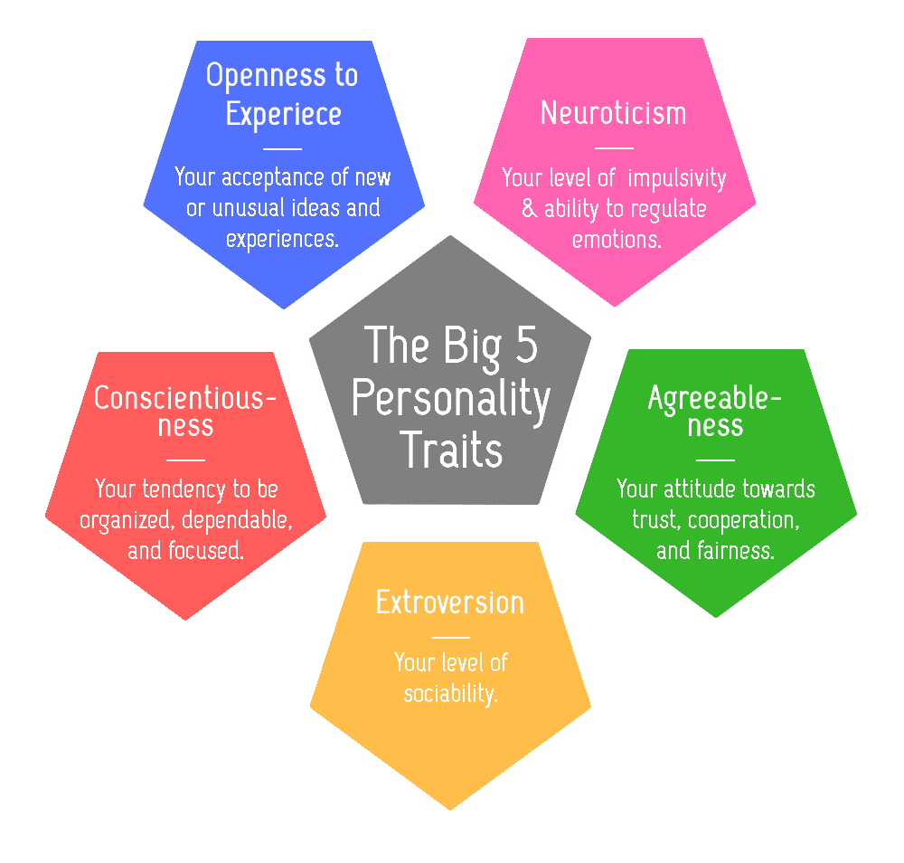
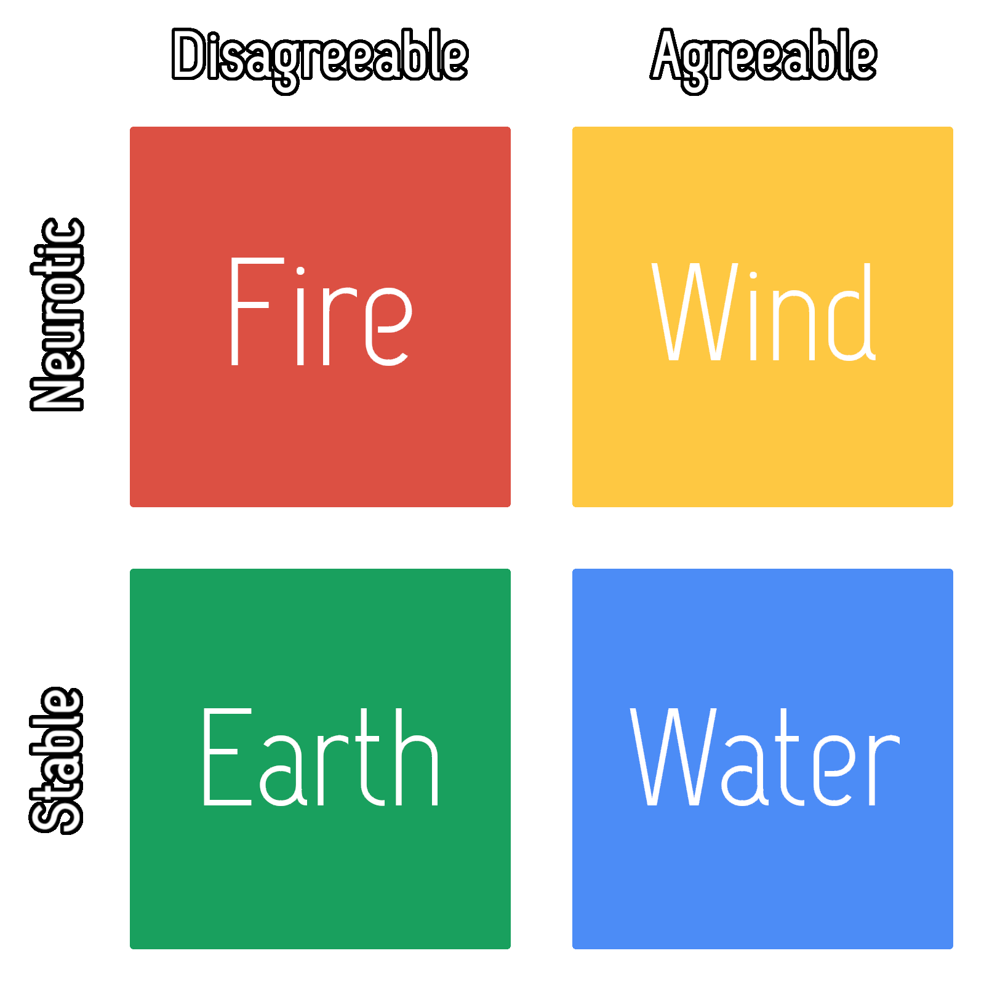

Why are people's personalities so different from one another?
This is a question that evaded sages, mystics, and philosophers for centuries. It’s wondrous to think that one person can be so impulsive, competitive, and outgoing, while another person is contemplative, conservative, and shy. Naturally, different groups created theories to explain these vast differences. Societies thought that these personality variations were products of one's birth month or year. Celestial events were also thought to affect the internal workings of our minds and hearts. Recently, science has discovered that our personality is not determined by the events of distant stars but rather something much closer to us: our genes.
To fully understand personality, one must deduce the fact that our personality evolved, just like all other parts of our bodies. Our hands evolved to finely manipulate tools, our legs evolved to traverse long-distances with bipedal motion, and our extraordinary brains evolved to allow us thrive in any corner of the world. Our personalities evolved with the same principles—the traits helped us survive and reproduce, which led those traits to proliferate to the next generations.
For example, cooperation and kindness helped a group of hunter-gatherers survive because they took care of each other, while anger and rage helped the same group fight off enemies. If we think of these traits on a scale, cooperation can be 0 and aggression is 100. Most people fall in the 50s in the cooperation vs. aggression spectrum. Being either too aggressive or too passive is harmful. Although most of us are around the 50-range, there are a few of us at the 25 and 75 range, and even fewer at the 10 and 90 range. The term for this is 'normal distribution', and all that word means is that more people fall around the 50 range than any other range.
Cooperation vs. aggression is just one dichotomy of personality. Scientists discovered five central traits—each with their own dichotomy—through a method known as factor analysis, which was only possible with the increase of computational power. These traits were are formally known as 'The Five Factor Model of Personality' and 'The Big Five Personality Traits', or more commonly as the Big 5. These five traits include: Openness to experience, Conscientiousness, Agreeableness, Extroversion, and Neuroticism."
My Element works by assessing your agreeableness and neuroticism then assigning those traits to mystical perceptions of the four elements. The elements can be easily remembered and shared. Water is calm and accommodating; wind is gentle and sporadic; fire is wild and intense; earth is contemplative and unrelenting. The elements are the result of two traits coming together.
Each trait has their individual benefit. Disagreeable people rarely get taken advantage because they are not afraid to put their foot down. Agreeable people are easy to be around because they go with the flow. Neurotic people take action quickly because their shifting emotions spring them to act. Stable people keep a calm head and are good at dealing with emergencies. These traits evolved because they benefited our ancestors, which led the traits to proliferate. Since these traits arguably evolved simultaneously alongside each other, no one trait should be seen as superior. Consequently, that means no element is superior to another. Although, it is perfectly okay to have a preferred element.
And if you find that your element might be incorrect, wait a day or two to complete the quiz again. Many times, people will be between two elements since most of us tend to be in the the figurative 50-range, as described above. Seeing the percentage breakdown of your element can be helpful too, which can be found in the Premium Feature section of the app. Generally, our elements stay the same throughout our lives, since personalities can go through little change—that is NOT to say that people cannot develop, evolve, or change their knowledge, habits, and skills. Note that acquiring a new skill set can bring joy or productivity to one's life but it will not change or alter the personality. It’s always advised to educate yourself and attain new knowledge. Conversely, it's ill advised to beat yourself about every little quirk. For example, if you get waves of anxiety, learn to ride the waves instead of getting beat up by the inevitable waves. In life, we discover who we are more than we change who we are. Cherish yourself.